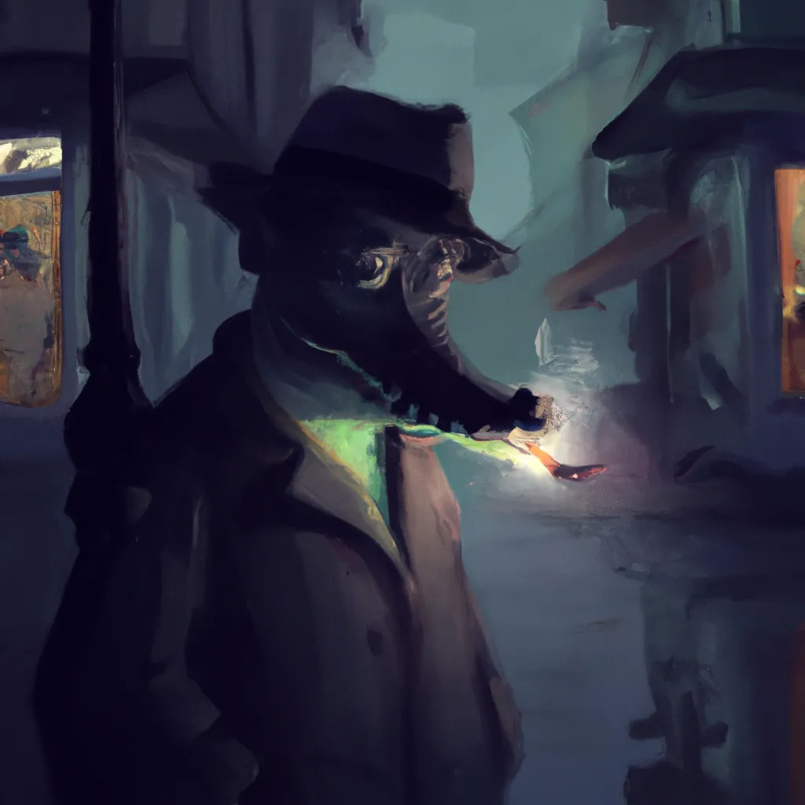

Alex K. Croc had a knack for scaring the words out of criminals. It's what made him a great detective. But today, even his best scare tactics weren't working. The suspect across from him remained stoic and unresponsive, his arms crossed defiantly over his chest. Alex leaned in closer, his voice dropping to a menacing whisper. "I know you did it. There's no use denying it." The suspect remained silent, his eyes locked on Alex's, unwavering. Alex straightened up, frustration mounting. He needed a new approach. As he paced back and forth, he caught a glimpse of the suspect's wrist. A tattoo, barely visible beneath his shirt sleeve. Alex's mind raced, piecing together clues. He knew what he had to do. Without hesitation, he grabbed the suspect's wrist and roughly pulled up his sleeve. The suspect winced in pain, but Alex was relentless. He needed answers. As he studied the tattoo, his mind clicked into overdrive. It was a symbol, a clue to the larger picture. With newfound determination, Alex turned back to the suspect, a fierce glint in his eyes. "You're involved in something bigger than just this crime. I can see that now," Alex growled. "But I need to know everything, and I mean everything. And you're going to tell me, one way or another." The suspect's face twitched, a hint of fear creeping in. Alex knew he was getting closer to the truth. As he leaned in closer once again, the suspect finally cracked. "It was the boss," he whispered. "He made me do it. He said if I didn't, he would kill my family." Alex's blood boiled with anger. This was bigger than he ever could have imagined. With a cold, steely determination, he made a vow to take down the entire organization and bring justice to the victims. And he knew, with his skills and this new lead, he would stop at nothing to make that happen.
